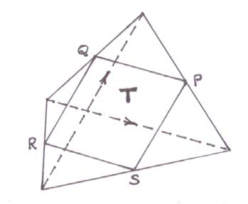
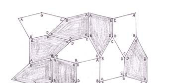

§5 · Rooftop floor
Four half-turns

We'll show that the area of a quadrilateral stays put under a deformation effected by any translation of a diagonal. In particular, a translation B'D' to BD after which AC and BD bisect each other, converts any given quadrilateral AB'C'D' to a parallelogram ABCD (opposite sides parallel and equal) of the same area.
Besides, we have stumbled on a striking fact: the plane can be tiled by congruent copies of any given quadrilateral! To see this, we deform all parallelograms having 'the same chessboard-colour' as ABCD in the same way: the spaces left between the ensuing orange quadrilaterals will be congruent yellow quadrilaterals, namely, the fusions of the yellow triangles of each strip with those of an adjacent strip.
Drag the corners
Drag any red dot to reshape the master quadrilateral. The plane tiles with its congruent copies by repeated half-turns around edge midpoints. Even non-convex quadrilateral tiles do!
Crystallography, and Marjorie Rice
If a tiling has a symmetry relating any pair of tiles, then its symmetries are said to form a crystallographic group. Our quadrilateral tiling is one of these because, when a tile executes a half-turn around the mid-point of one of its edges, one obtains the tile sharing that edge with it.
It has been known for 200 years that, upto a composition-preserving bijection, there are exactly 16 more of these crystallographic groups. By 1900, the classification of the analogously defined spatial groups, which are the ones that really matter in the study of crystalline substances, was also essentially complete, there being now, exactly 230 spatial crystallographic groups.

For Marjorie Rice, you see, was a housewife who had studied maths only till her high school 35 long years before, when she chanced one day upon an article on pentagonal tilings in the "Scientific American," that led her to start making more and more of these tilings on her own.
In his own words: Hilbert's question and its negative answer
Hilbert did not ask for a similar planar example, it is likely that he had expected the answer 'yes' to the following question: if congruent copies of a convex polygon tile the plane, then can they also tile it crystallographically? The second motif on this roof-top, that is, "Marjorie's example," shows that the answer is 'no'!
Since one turns through 360 degrees as one goes around a convex polygon, the five angles of such a pentagon ABCDE obey A + B + C + D + E = (5 × 180) − 360 = 540 degrees, and, in general, they obey no other condition. To make a tiling it is necessary — otherwise its tiles won't fit at a vertex — that some of these angles, possibly with repetitions, should add up to 360 degrees. Again, it is necessary that some of the edges {AB, BC, CD, DE, EA} be equal: otherwise, the two tiles across any edge have to be reflections of each other, so we can tile only if the five angles are divisors of 360 adding up to 540, that is, never.
A longish list of fitting conditions, now available. The pentagon used here obeys the conditions B + 2E = 360, C + 2D = 360 and EA = AB = BC = CD, and the fifth edge DE is shorter.